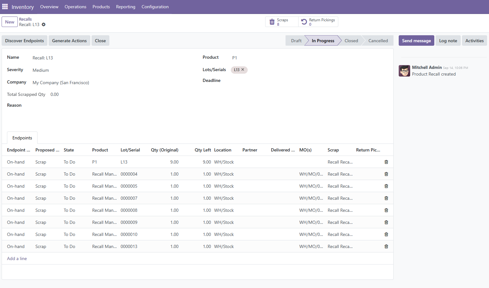

Module
Inventory
Odoo 18.0
PV Stock Recall Orchestrator
Start a recall from a Lot/Serial, discover impact, and prepare actions (returns/scrap).
Technical name: pv_stock_recall · License: LGPL-3
Recall Form (Example)

Example recall in progress with discovered endpoints and proposed actions.
What this module does
Recall from Lot/Serial
Kick off a recall directly from a tracked Lot/Serial so you always target the exact items affected.
Impact discovery
Traverse related stock moves, pickings and manufacturing orders to list all potentially impacted documents and partners.
Operational actions
Create return pickings, scrap faulty goods, and track acknowledgements from internal teams and customers.
Messaging & Chatter
Leverage Odoo mail thread to notify stakeholders and keep a full audit trail per recall.
Dependencies & Compatibility
- Requires modules:
base,product,stock,mail,mrp - Odoo: 18.0
- Tracking: Designed for products tracked by Lot/Serial.
Installation
- Copy the folder
pv_stock_recallinto your Odoo addons path. - In Odoo, go to Apps → click Update Apps List.
- Search for “PV Stock Recall Orchestrator (MVP)” and click Install.
Tip: ensure Inventory and Manufacturing (MRP) are installed and product tracking (Lot/Serial) is enabled.
Access Rights
- Recall User — can view recalls and follow instructions.
- Recall Manager — can create/confirm recalls and trigger actions (returns, scrap, notifications).
Main Concepts
- Recall: the central record that references one or more Lots/Serials, scope, and actions.
- Recall Lines: individual lines representing affected documents (pickings, moves, MOs, lots).
- Acknowledgements: confirmation from internal users or customers that recall actions were received or completed.
Typical Workflow
- Identify an affected Lot/Serial.
- Start a recall from the Lot/Serial or from the Recall menu.
- System discovers impacted documents and partners.
- Plan and execute actions (returns, scrap) and send notifications.
- Track acknowledgements and close the recall when done.
Fields (Overview)
Recall
name— Referencestate— Draft / In Progress / Done / Cancelledlot_ids— Target Lots/Serialsimpact_move_ids,impact_picking_ids,impact_mo_ids— Impacted docspartner_ids— Potentially impacted partnersmessage_ids— Chatter
Recall Line
document_type&document_reflot_id,product_id,qtyaction— Return / Scrap / Notifystate— New / Planned / Done
Troubleshooting
- Nothing appears as impacted: confirm the product is tracked and the Lot/Serial is used in stock moves.
- Cannot start recall: ensure you belong to the “Recall Manager” group.
- Actions fail to create: check that related warehouses, routes and returns operations are properly configured.
Changelog
- 18.0.1.0.0 — Initial MVP: start recall from Lot/Serial, impact discovery, returns/scrap, chatter.
Support
For questions or issues, contact the module author (PV) via your usual channel.
Step-by-Step Guide (Preferred: Start from Serial/Lot)
A. Prerequisites checklist
- The affected product(s) are configured with Tracking = By Lots/Serial Numbers.
- You have the Recall Manager rights for creating and confirming recalls.
- Warehouses and return operations are set up (so return pickings can be created/validated).
B. Start a recall from a Serial/Lot (recommended)
- Open Inventory → Products → Lots/Serial Numbers.
- Search and open the affected Lot/Serial record.
- Click Start Recall on the lot form.
- Fill in recall details:
- Title/Reason — short description of the issue.
- Scope — confirm the lot(s)/serial(s) included.
- Confirm. The system runs impact discovery and lists impacted:
- Customer or internal pickings where the lot was moved/delivered.
- Stock moves referencing the lot.
- Manufacturing Orders (MOs) that consumed or produced items with this lot.
- Partners (customers, subcontractors) tied to these documents.
- Review the results, then proceed to Plan & Execute Actions below.
C. Alternative: Start from the Recall menu
- Go to Inventory → Operations → Recalls.
- Click New, enter a title and select one or more affected Lots/Serials.
- Confirm to launch impact discovery and proceed with actions as in section B.
D. Plan & execute actions
- Returns
- From each impacted delivery picking, use Return to generate a return picking. Align quantities to what is expected back.
- If the lot is still in internal locations, you can create internal return moves instead of customer returns.
- Validate return pickings to bring goods to your designated return intake location.
- Scrap
- Use Scrap on items confirmed as defective.
- Choose the correct source location (where the item physically is) and validate.
- Manufacturing impact
- For open MOs consuming the affected lot: pause consumption, adjust component availability, or replace with an alternative lot.
- For finished goods previously produced with the lot: review downstream deliveries and include them in returns if already shipped.
E. Notify stakeholders
- Use the recall’s chatter to send messages and add followers (internal teams, impacted customers).
- Internal template:
Subject: Recall <RECALL-NAME> — Actions Needed Affected lot(s): <LOT-CODES> Please process assigned returns/scrap on related pickings/MOs and confirm when complete.
- Customer template:
Subject: Product Safety Notice — Lot <LOT-CODE> We identified a potential issue with items delivered on <DATE/RNs>. Please stop using the product and arrange a return. We will handle replacements/credit immediately.
F. Track acknowledgements & progress
- Monitor recall lines’ state (New / Planned / Done) as returns and scrap moves are validated.
- Use chatter notes for who did what and when, keeping the audit trail complete.
G. Closing criteria
- All planned return pickings are validated (or marked not needed with justification).
- All required scrap operations are validated.
- Stakeholders have been informed; notes and supporting files are attached to the recall.
- Set the recall to Done.
H. Audit & reporting
- Filter recalls by state, create date, or lot to review scope and outcomes.
- Export recall lines (pickings, moves, partners) if you need to share a summary externally.
I. Tips & pitfalls
- If only a subset of a lot is affected, restrict recall actions to those quantities and document rationale.
- Backdated transfers may change trace results; re-run/refresh discovery after corrections.
- For multi-warehouse flows, verify each warehouse’s return route and intake location before validating returns.
Usage case 1 — Finished goods delivered to customers
- A defect is reported on finished product lot
FG-LOT-2025-0912. - Open Lots/Serial Numbers, locate
FG-LOT-2025-0912, click Start Recall, confirm. - Impact discovery lists several customer deliveries:
- WH/OUT/00981 → Customer A, qty 4
- WH/OUT/01022 → Customer B, qty 2
- For each delivery, create a Return picking with matching lot and quantity; send the customer message template.
- Validate returns upon receipt; for items confirmed faulty, execute Scrap.
- Record notes (refund/replacement reference). Set recall to Done when all lines are processed.
Usage case 2 — Component lot used in manufacturing
- Supplier informs that component lot
COMP-LOT-777is out of spec. - Open the component lot, click Start Recall, confirm.
- Impact discovery shows:
- Open MO
MO/001234consumingCOMP-LOT-777 - Finished MO
MO/001198that produced goods delivered in WH/OUT/01045
- Open MO
- Actions:
- Open MO: pause further consumption; replace with an approved lot before continuing.
- Finished MO & deliveries: create Return pickings for shipped finished goods; scrap any defective stock on hand.
- Notify production and affected customers using the provided templates, track acknowledgements in the chatter.
- Close the recall once all MO adjustments, returns and scrap validations are completed.
Process Description (How the module works)
- Discover Endpoints: On the Recall, press Discover Endpoints. The system scans stock moves, pickings, and MOs related to the selected lot(s) and fills Recall Lines with every impacted endpoint (on-hand, delivered, manufacturing).
- Generate Actions: Press Generate Actions. For each endpoint, the module proposes and links an action:
- Delivered endpoints → create/prepare Return picking(s) back from the partner.
- On-hand or returned endpoints → prepare Scrap moves.
- Execute & link:
- Validate the Return pickings to receive goods back.
- After a return picking is validated, the module creates (and links) the corresponding Scrap move for the same product/lot at the correct location, so the chain is Delivery → Return → Scrap on the same Recall line.
- Line states and quantities update as operations are completed; use the chatter to document notes and confirmations.
- Close: Once all lines are resolved (no quantity left and all actions done), set the Recall to Done.